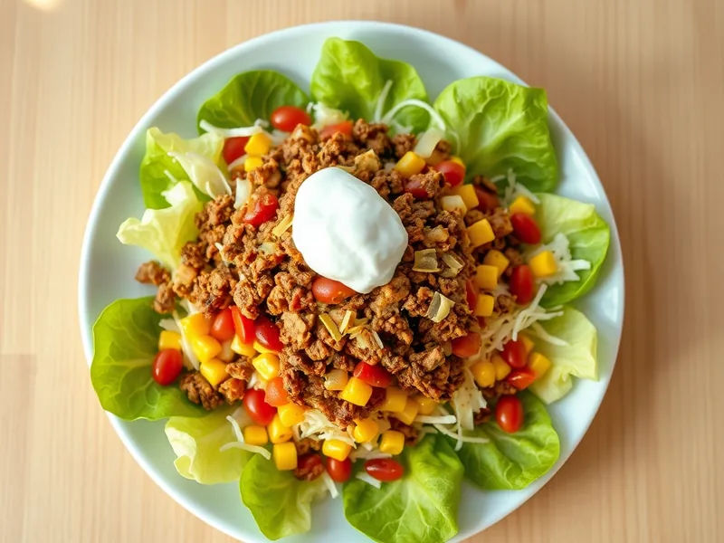

Фото: Иллюстрация ИИ, Cloudflare Workers AI
Тако-салат с фаршем и фасолью
Мексиканский салат из жареного фарша со специями, фасоли, кукурузы и сыра
25 мин4 порц.542 ккал на порциюБ 32 · Ж 33 · У 29Американская кухня
Продукты на 4 порц.
- Говяжий фарш400 г
- Фасоль консервированная1 шт
- Кукуруза консервированная0,5 шт
- Помидоры2 шт
- Салат листовой150 г
- Сыр твёрдый80 г
- Сметана 20%3 ст. л.
- Лук репчатый1 шт
- Растительное масло2 ч. л.
- Зира1 ч. л.
- Паприка1 ч. л.
- Соль1 ч. л.
- Острый перец молотый по желаниюпо вкусу
Как готовить
- Мелко нарежьте лук и обжарьте в масле на среднем огне 3 минуты.
- Добавьте фарш и жарьте на сильном огне 7-8 минут, разбивая лопаткой, пока не исчезнет розовый цвет и не появятся румяные крошки.
- Всыпьте зиру, паприку, соль и острый перец, добавьте 3 ст. л. воды и прогрейте 1 минуту.
- Слейте жидкость с фасоли и кукурузы, фасоль промойте. Нарежьте помидоры кубиками, салат соломкой, натрите сыр.
- Выложите в тарелки салат, сверху горячий фарш, фасоль, кукурузу, помидоры и сыр, добавьте ложку сметаны.
Совет. Хрустящие кукурузные чипсы сверху сделают салат похожим на настоящий мексиканский. Фарш можно взять куриный, тогда жарьте его 6 минут.